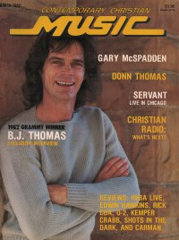

CMnexus: Contemporary Christian culture, music, and media.
|
|
CCM, Mar 1982, vol. 4, iss. 9
| Cover |
|---|
|  | | Writers in this Issue |
|---|
Angelotti, Bob
Bagdon, Phillip
Baker, Paul
Burns, Carolyn A.
Fischer, John
Genty, Charles
Platt, Karen Marie
Smith-Newcomb, Quincy
Styll, John W.
Taylor, Steve
Thiel, Doug
Ward, James
Witty, John
Witty, VickiJo
|
Cover Feature:
- "B. J. Thomas' View From The Stage" by Karen Marie Platt
Article:News:Records:On The Air:Performance:
- "Servant Kick off World Tour" by Quincy Smith-Newcomb
- "Imperials Embark on 78-City Tour"
What's New:
- Reba - Lady Live by Carolyn A. Burns
- Rick Cua - Koo-ah by Karen Marie Platt
- Edwin Hawkins - Imagine Heaven by Karen Marie Platt
- Kemper B. Crabb II - The Vigil by Carolyn A. Burns
- U2 - October by Phillip Bagdon
- various artists - Shots In The Dark by Steve Taylor
- Carman - Some O Dat by Carolyn A. Burns
Sound Advice:
- "Cities on Hills are Visible and Vulnerable" by John Fischer
Artist's Corner:
- "From High School Love Songs to the Nicene Creed" by James Ward
Editor's Corner:
- "A Sensitive Issue" by John W. Styll
B. J. Thomas & crossover artists; audience expectations & controversies
|